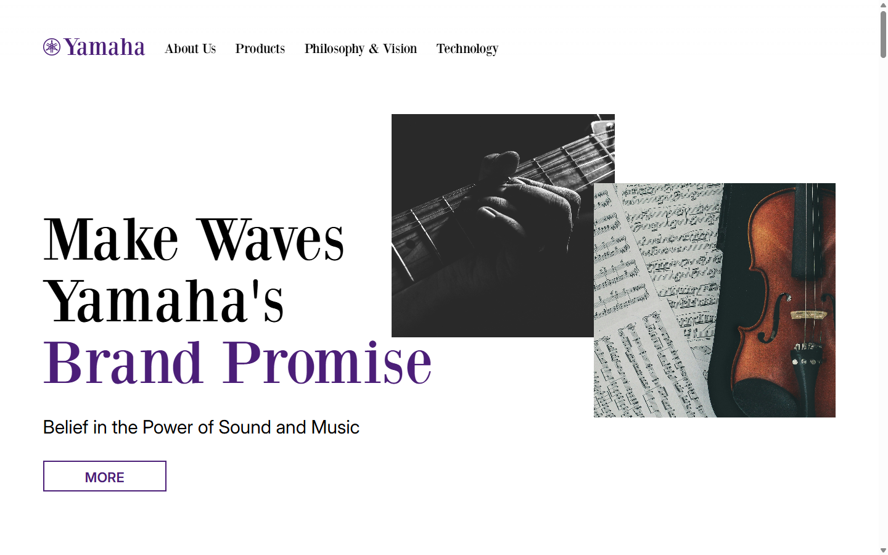
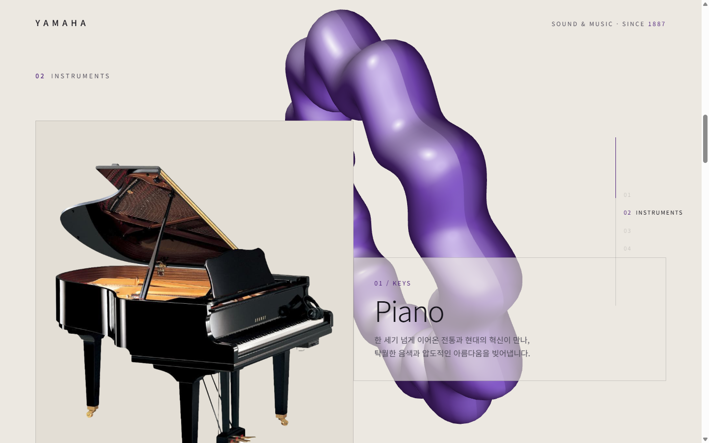
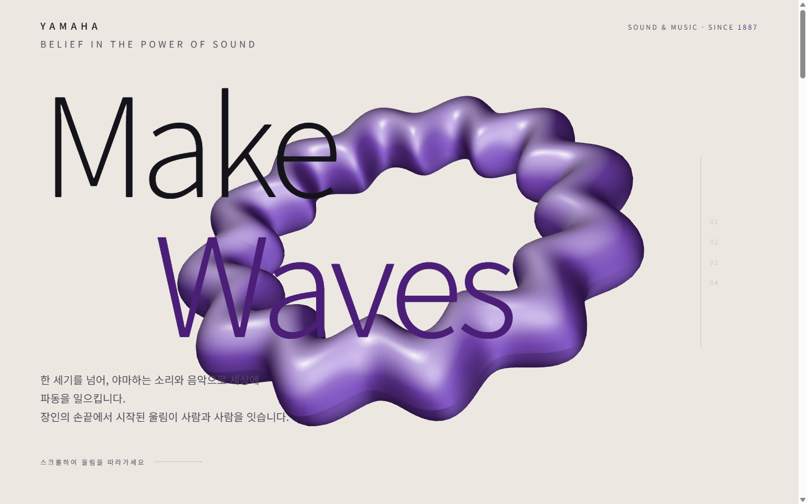
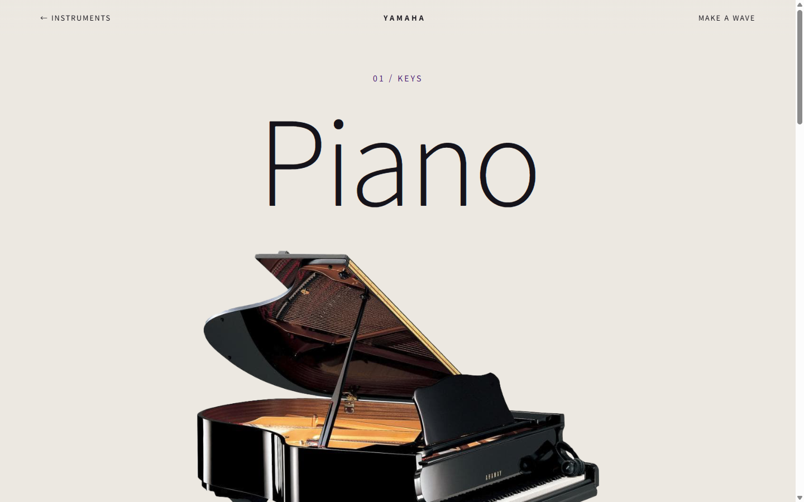
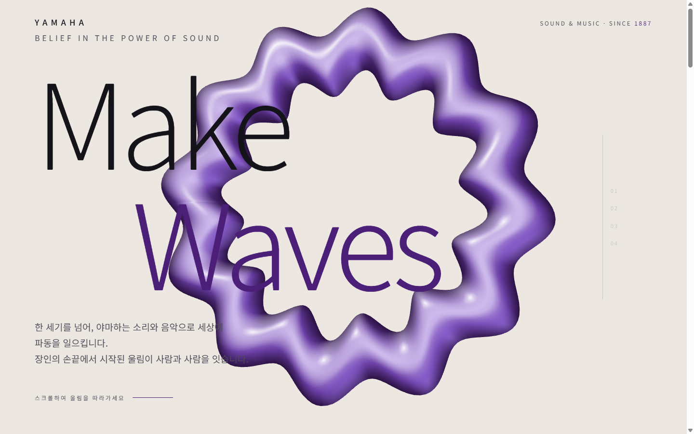

악기 상세 딥다이브
Instruments가 '설명'으로 끝나던 막다른 골목. → 대표 1종 Piano 상세를 신설하고, 카드 이미지 → 상세 히어로를 View Transitions로 모핑.
UX Case Study — Human × AI
기존 Yamaha 리디자인을 Claude Code와 협업해 여정·인터랙션·코드 품질까지 한 단계 더 끌어올린 과정. AI가 대신 만든 것이 아니라, 사람이 주도하고 AI와 함께 발전시킨 기록.

원본은 감성적인 비주얼보다 정보 전달에 치우친 레이아웃이 중심이었고, 브랜드 아이덴티티를 충분히 전하지 못했습니다. 제품 문단은 복붙됐고, 링크는 죽어 있었습니다.

1차 리디자인은 3D 크롬 사운드 링과 4막 서사(Resonance·Instruments·Voices·Legacy)로 '소리 브랜드' 정체성을 크게 끌어올렸습니다.
그러나 여정은 막다른 골목이었습니다. 악기를 '더 깊이' 볼 수 없었고, 종착지가 없었으며, 사운드 링은 탭이 숨겨져도 계속 렌더되고 카운트업 숫자는 스크린리더에 중간값으로 읽혔습니다.
→ 여기서부터가 AI 협업으로 발전시킬 지점이었습니다.
각 개선은 문제 발견 → AI 제안 → 검토·선택 → 실측 검증의 루프로. AI는 대안을 제시했고, 방향의 선택과 판단은 사람이 했습니다.
Instruments가 '설명'으로 끝나던 막다른 골목. → 대표 1종 Piano 상세를 신설하고, 카드 이미지 → 상세 히어로를 View Transitions로 모핑.
순환으로 끝나던 여정을 '문의'로 닫음. 클라이언트 검증 + 성공 상태. ruler·드로어·상세 CTA에서 연결. "데모 — 실제 전송되지 않음" 정직하게 명시.
시그니처인 사운드 링을 '울림'에 반응시킴. 스크롤 속도와 클릭(현을 튕기듯)에 링이 맥동(pulse)하며 매 프레임 감쇠. 소리가 사용자에게 반응하는 감각.
링 렌더가 탭이 숨겨져도 상시 실행 → document.hidden 시 정지.
카운트업은 aria-label=최종값으로 스크린리더가 중간값을 읽지 않게.
모바일에서 반투명 링이 히어로 본문 대비를 낮춤. → 재질 opacity 0.6→0.42로 더 은은하게, 본문 가독성을 확보하면서 시그니처는 유지.
핸들을 드래그해 원본과 AI 리디자인을 비교해 보세요.



“AI가 대신 만든 것이 아니라, 내가 주도하고 AI와 협업해 더 높은 완성도로 발전시켰다.”
문제 정의와 방향의 판단은 사람이, 대안의 폭과 구현의 속도는 AI가. 그 협업의 의사결정을 결정 로그(Y-D1–Y-D6)로 남겨, 결과물뿐 아니라 '어떻게 발전했는가'까지 보이도록 했습니다.